HTTP 服务器的一些截图记录
HTML 页面
服务器的 HTML 页面有两个分别是 index.html 和 README.html。这个 css 风格是我最喜欢的，因此也就应用在了这个小项目上。
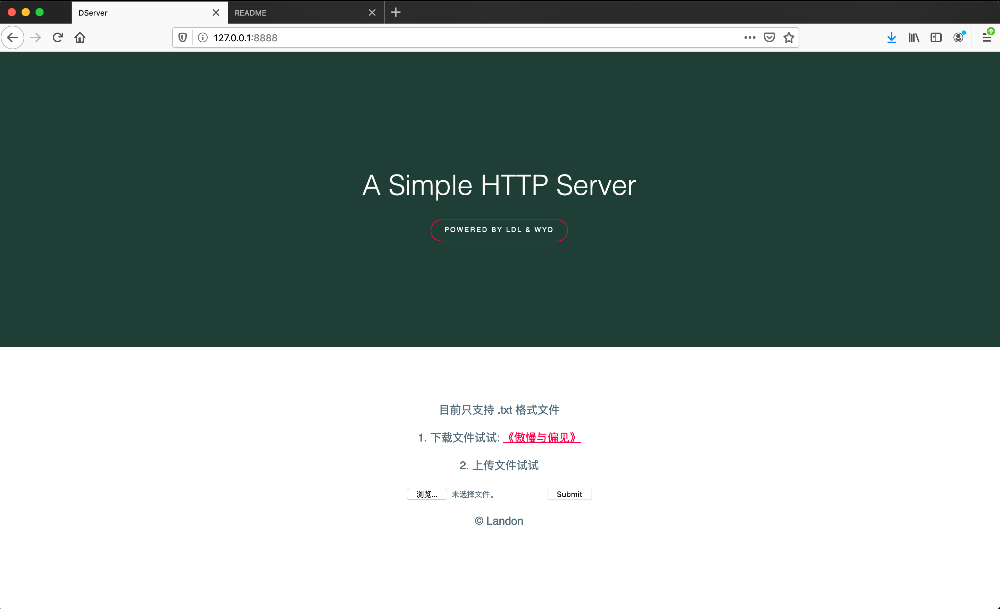
README.html 是我们小组的成员介绍，以及服务器的一些使用说明。
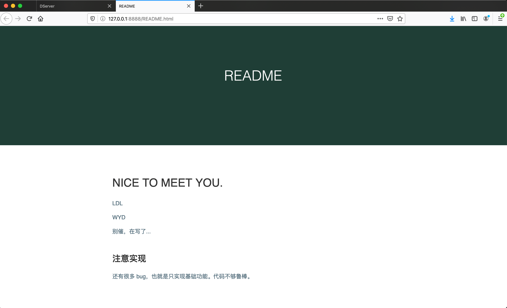
GET/POST 文件下载和上传功能
第一个功能：实现 GET/POST 方法，支持文件的上传和下载。
// GET Method
if (!strcmp(method, "GET")) {
handle_request(cfd, uri);
}
// POST Method
else if (!strcmp(method, "POST")) {
handle_post(cfd, buffer);
}
GET 方法用于请求资源和文件下载等，如下是一个简单的 GET 请求。
GET /css/style.css HTTP/1.1
Host: 127.0.0.1:8888
User-Agent: Mozilla/5.0 (Macintosh; Intel Mac OS X 10.15; rv:71.0) Gecko/20100101 Firefox/71.0
Accept: text/css,*/*;q=0.1
Accept-Language: zh-CN,zh;q=0.8,zh-TW;q=0.7,zh-HK;q=0.5,en-US;q=0.3,en;q=0.2
Accept-Encoding: gzip, deflate
Connection: keep-alive
Referer: http://127.0.0.1:8888/
Cache-Control: max-age=0
图片传输失败。
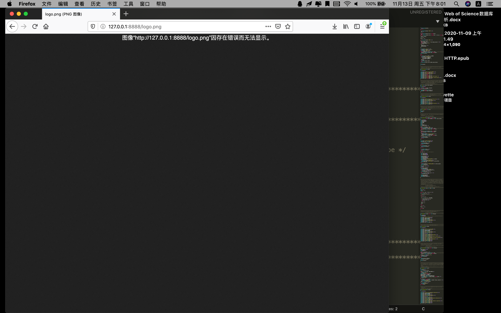
当上传大文件时，服务器段因为代码写得不够好，导致数据接收不完整。上传顾城的一首诗：
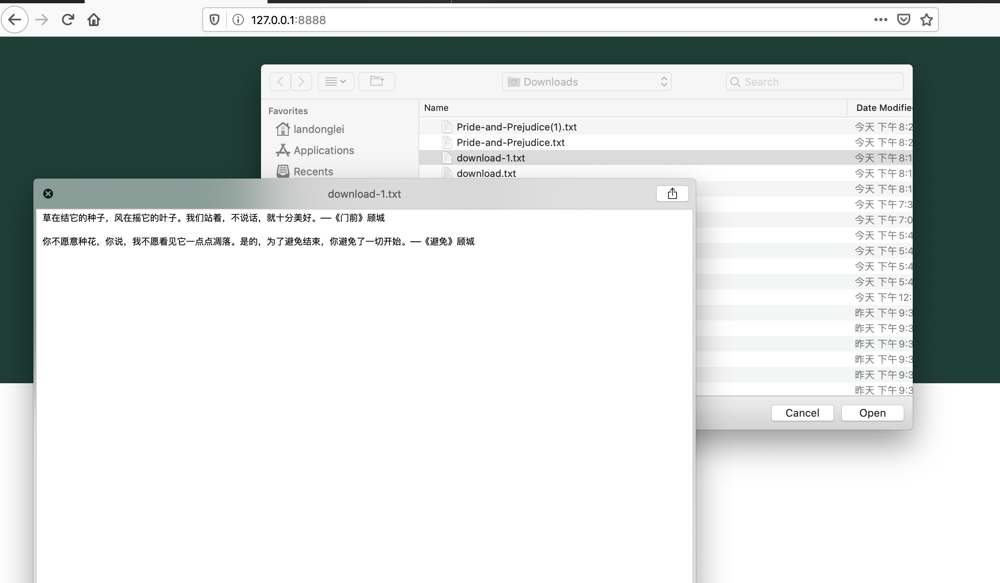
上传完成：
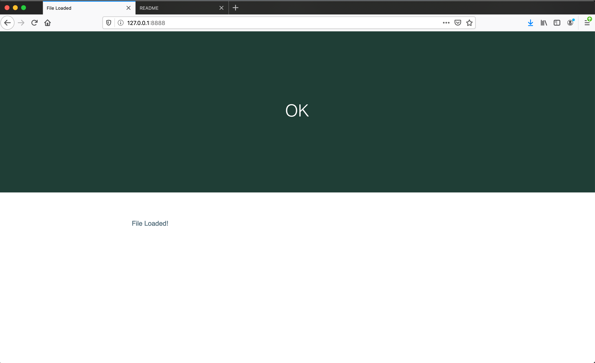
服务器端查看数据（书籍还未进行处理，还保留包中的一些内容）：
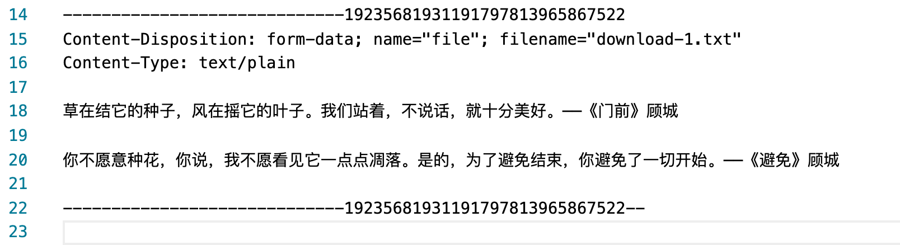
上传一个较大的文件，《傲慢与偏见》，可能是服务器端缓存区过小等原因，发生数据缺失，文件上传不完整。
出现报错。服务器端代码还需要再完善。
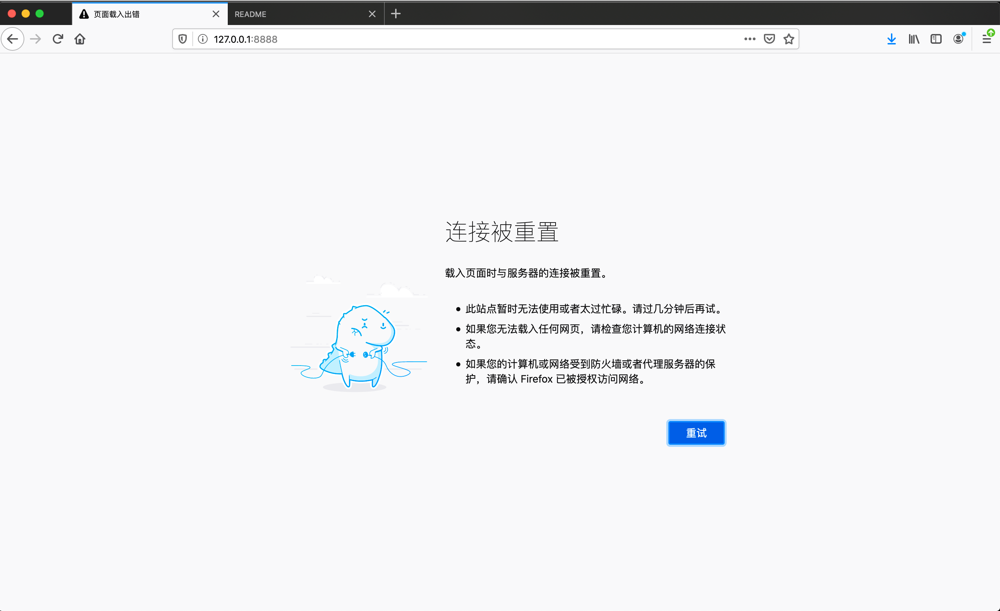
查看一下服务器端所保存下来的数据，是不完整的。
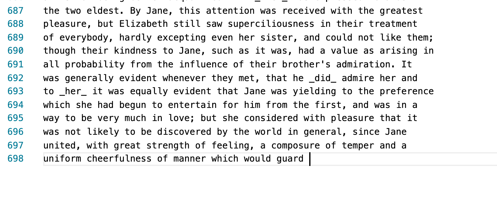
实现分块传输、持久连接和管道
简单来说：
-
分块传输：
Chunked Transfer Coding -
“分块传输编码会将实体主体分成多个部分（块）。每一块都会用十六进制来标记块的大小，而实体主体的最后一块会使用“0(CR+LF)”来标记。
使用分块传输编码的实体主体会由接收的客户端负责解码，恢复到编码前的实体主体。
HTTP/1.1 中存在一种称为传输编码（Transfer Coding）的机制，它可以在通信时按某种编码方式传输，但只定义作用于分块传输编码中。”
摘录来自 图解 HTTP 上野宣、于均良
-
持久连接：
keep-alive，只要任意一端没有明确提出断开连接，则保持 TCP 连接状态。 -
管道：客户端不用等待服务器响应，就可以直接发送下一个请求，即并行发送多个请求。
-
“持久连接使得多数请求以管线化（pipelining）方式发送成为可能。从前发送请求后需等待并收到响应，才能发送下一个请求。管线化技术出现后，不用等待响应亦可直接发送下一个请求。
这样就能够做到同时并行发送多个请求，而不需要一个接一个地等待响应了。”
摘录来自 图解 HTTP 上野宣、于均良 此材料受版权保护。
HTTPS
“HTTP + 加密 + 认证 + 完整性保护 == HTTPS.”
需要安装 OpenSSL。
brew install openssl
➜ ~ which openssl
/usr/local/opt/openssl@1.1/bin/openssl
编译的命令，注意参数。
gcc -g server_ssl.c -o server_ssl -I//usr/local/opt/openssl@1.1/include -L//usr/local/opt/openssl@1.1/lib -lssl -lcrypto
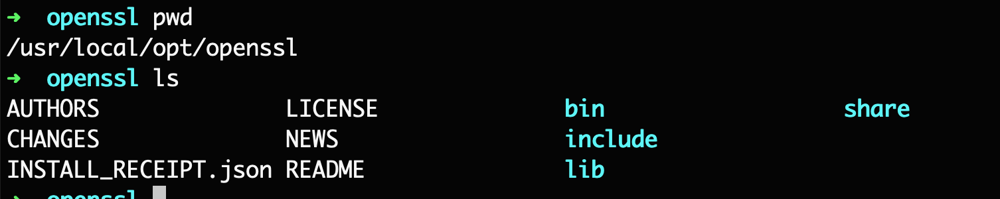
libevent
libevent 在我的电脑上位于：
/usr/local/Cellar/libevent/2.1.12
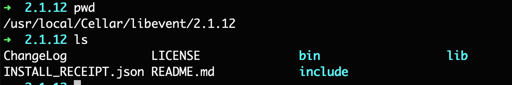
# 编译时加上参数
-levent -lpthread
#include <event2/event.h>
#include <event.h>
#include <pthread.h>
代码
// DServer
// GET/POST 文件上传和文件下载
#include <stdio.h>
#include <stdlib.h> // exit
#include <arpa/inet.h> // inet_ntoa
#include <netinet/in.h> // sockaddr_in
#include <string.h> // strlen
#include <unistd.h> // close function
#include <sys/stat.h>
#include <sys/errno.h>
#include <sys/fcntl.h>
#include <netinet/tcp.h>
#include "config.h"
int start_server();
void handle_request(int cfd, char uri[]);
void construct_header(char *header, int status, char *type);
void get_filetype(char *filename, char *filetype);
const char *get_status_by_code(int status);
void handle_post(int cfd, char buffer[]);
void request_image(int cfd, char uri[]);
int main() {
int sfd = start_server();
while (1) {
// 4. 服务器接收客户端的连接请求
struct sockaddr_in client_addr;
socklen_t len = sizeof(client_addr);
int cfd = accept(sfd, (struct sockaddr *)&client_addr, &len);
if (cfd == -1) {
perror("accept() error!\n");
exit(EXIT_FAILURE);
}
// DEBUG: 连接成功，打印出客户端的 IP 和端口号
// printf("client ip: %s, port: %d\n", inet_ntoa(client_addr.sin_addr), htons(client_addr.sin_port));
char buffer[MAX_SIZE] = {'\0'};
ssize_t rbytes = recv(cfd, buffer, sizeof(buffer), 0);
if (rbytes == -1) {
perror("recv() error!\n");
exit(EXIT_FAILURE);
}
printf("%s\n", buffer); // 请求内容
char method[MIN_SIZE] = {'\0'};
char uri[MIDDLE_SIZE] = {'\0'};
sscanf(buffer, "%s %s", method, uri);
// GET Method
if (!strcmp(method, "GET")) {
handle_request(cfd, uri);
}
// POST Method
else if (!strcmp(method, "POST")) {
handle_post(cfd, buffer);
}
else {
printf("Method Not implemented!\n");
}
close(cfd);
}
close(sfd);
return 0;
}
放一张工程的截图。
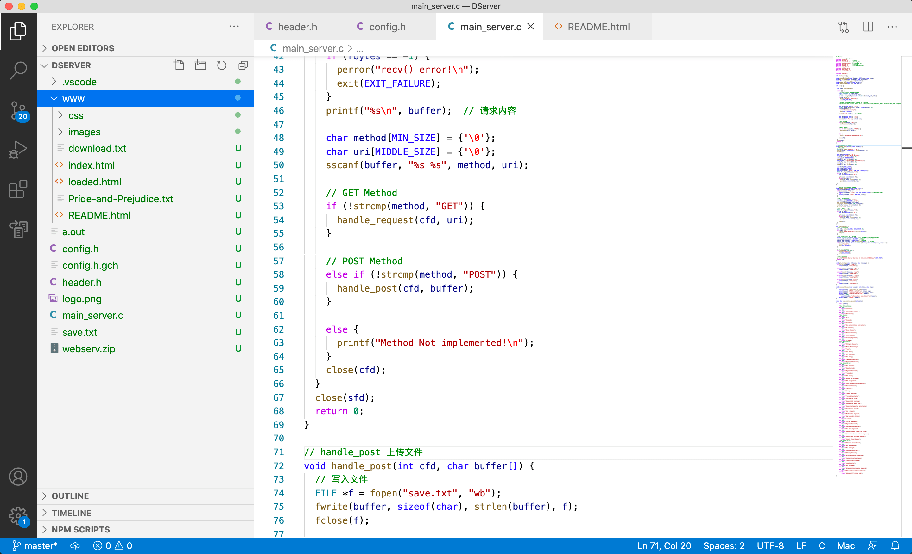